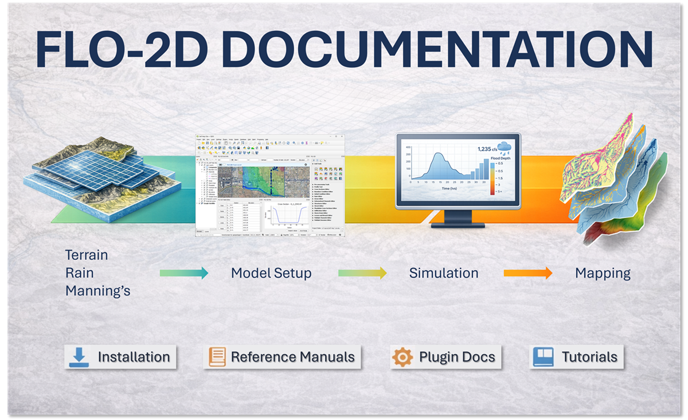

FLO-2D Pro Documentation
Contents:
FLO-2D Installation and Setup
FLO-2D Pro Resource Center
FLO-2D Gila for QGIS Documentation
FLO-2D MapCrafter
FLO-2D FLORunner
FLO-2D Gila Tutorials
FLO-2D Case Studies
FLO-2D Pro Documentation
FLO-2D Pro Documentation – Build 25
View page source
FLO-2D Pro Documentation – Build 25

Welcome to the Build 25 version of the FLO-2D Documentation.
Contents:
FLO-2D Installation and Setup
FLO-2D Pro Resource Center
FLO-2D Gila for QGIS Documentation
FLO-2D MapCrafter
FLO-2D FLORunner
FLO-2D Gila Tutorials
FLO-2D Case Studies
Version: Build25
Versions
Build25
Build23
Build21